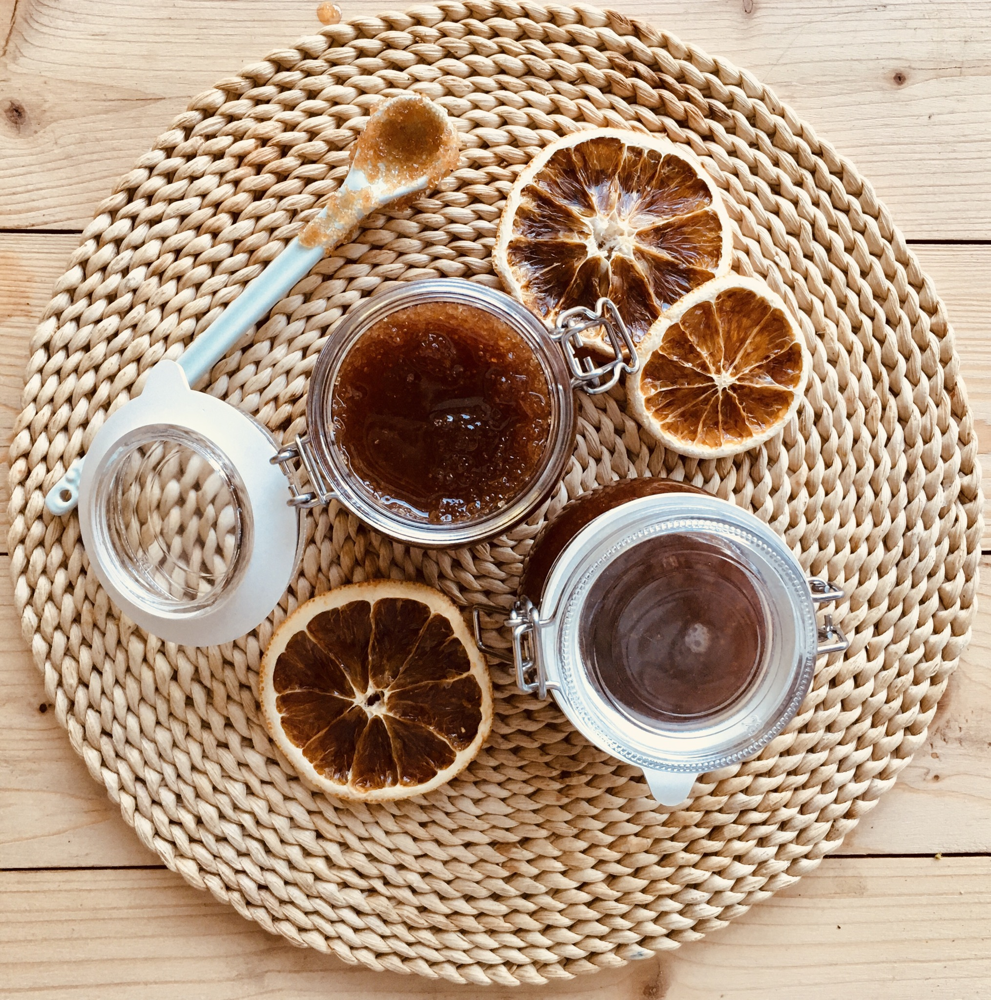
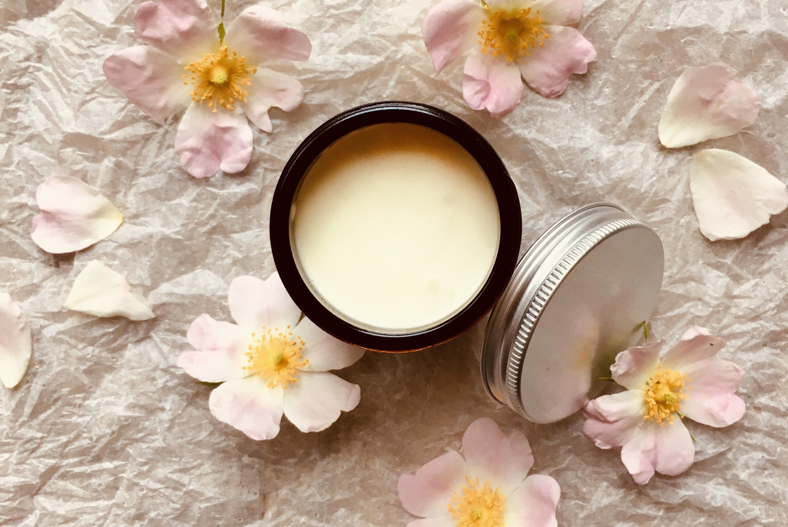
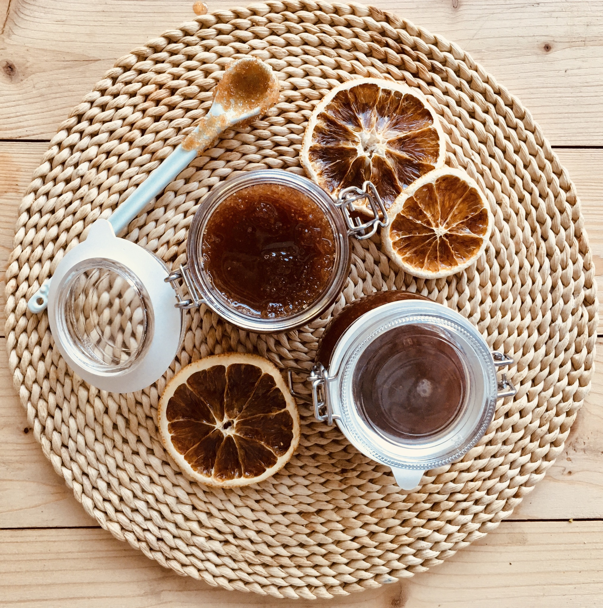
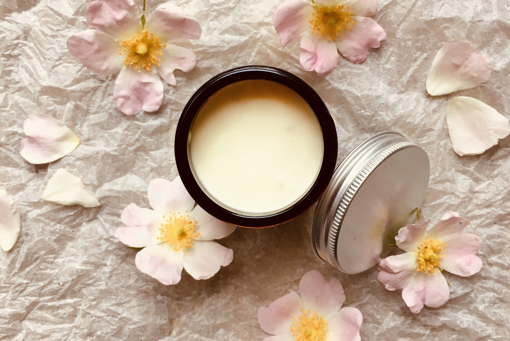

O mně
Jmenuji se Kateřina a k bylinkám a výrobkům z nich jsem došla postupně. Mastičky nám nejprve vyráběla mamka, používala jsem je hlavně na děti, které od mala trpí ekzémy. Po nějakém čase jsem se odvážila a výrobu jsem si zkusila i sama, když jsem v roce 2016 vyrobila svůj první levandulový olej a zjistila jsem, že mě práce s bylinkami a výroba z nich moc baví a je pro mě obrovský relax. Baví mě sledovat celý proces od začátku, od klíčení semínek až po jejich zpracování do konečného produktu. Baví mě studovat účinky bylinek, vymýšlet nové kombinace a vůně. Všechny pokusy jsem samozřejmě zkoušela nejdřív na sobě a rodině, kamarádi dostávali mojí přírodní kosmetiku jako dárky. I díky jejich pozitivní zpětné vazbě jsem se rozhodla ve výrobě pokračovat a posouvat. Stále zkouším něco nového, k bylinkovým mastičkám tak přibyly postupně krémy, balzámy na rty nebo tělový peeling z vlastních bylinných extraktů. K výrobě používám většinou své vlastní bylinky, které pěstuji na zahrádce na okraji Českých Budějovic, sbírám je v České Kanadě nebo je dostávám od rodiny a kamarádek.
Pořádám i kurzy výroby přírodní kosmetiky, aby si každý, kdo chce, ale sám si netroufá, mohl na vlastní kůži výrobu vyzkoušet, dotknout se bylinek a odnést si domů svůj vlastní výrobek.

 


